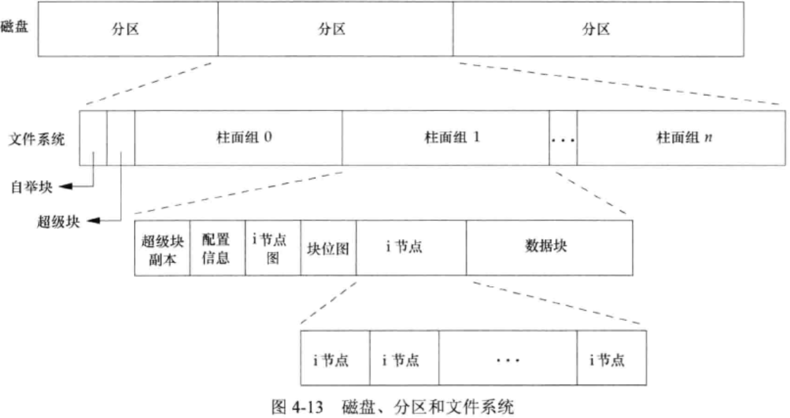

《Unix 环境高级编程》
第4章 文件和目录
4.2 stat, lstat, fstatat, lstat
int stat(const char* path, struct stat* restrict buf);- 返回与此命名文件相关的信息结构。其中mtime是修改文件的时间，atime上一次访问文件的时间，ctime是上一次文件状态（inode）修改的时间。
4.3 文件类型
- 普通文件、目录文件、块特殊文件（设备，带缓冲的访问）、字符特殊文件（设备，不带缓冲）、FIFO、套接字（socket）、符号链接（symlink）
4.5 文件访问权限
- 用户/组/其他，读/写/执行
- 在open文件时指定O_TRUNC必须对文件有写权限。
- 在一个目录中创建新文件必须对该目录有写和执行权限。
- 为删除一个文件，必须对该文件所在目录有写和执行权限，但是对该文件没有权限要求。
- 若用7个exec函数执行一个文件，必须对该文件有执行权限（
chmod +x filepath该文件必须是普通文件）
4.7 faccess, faccessat
int access(const char* pathname, int mode);int accessat(int fd, const char* pathname, int mode, int flag);- 测试文件权限，mode为R_OK/W_OK/X_OK，成功返回0，失败返回1
4.9 chmod, fchmod, fchmodat
- 为改变权限位，进程有效用户ID必须是文件的所有者ID，或进程必须有root权限。
4.11 chown, fchown, fchownat, lchown
int chown(const char* pathname, uid_t owner, gid_t group);- 在符号链接的情况下，
fchownat和lchown不改变符号链接指向的文件（设置了AT_SYMLINK_NOFOLLOW
4.13 文件截断
int truncate(const char* pathname, off_t length);int ftruncate(const char* pathname, off_t length);- 如果length大于文件长度，那么中间的内容都为0（可能在文件中创建了一个空洞）
4.14 文件系统

- 将磁盘分为若干个分区，每个分区可以包含一个文件系统，i节点是固定长度的记录项，它包含有关文件的大部分信息。
- 每个inode有一个链接计数，只有当链接计数减少到0时才能删除该文件。
- 删除一个目录项的函数为
unlink
- 删除一个目录项的函数为
ln不能跨越文件系统，因为hardnode不能跨越文件系统，inode指向同一文件系统中的inode。- 在不更换文件系统的情况下为一个文件重命名时，该文件的实际内容并没有移动。只需构造一个指向现有inode的新目录项，然后删除旧目录项。
4.15 link, linkat, unlink, unlinkat, remove
int link(const char* existingpath, const char* newpath);int linkat(int efd, const char* existingpath, int nfd, const char* newpath, int flag);- AT_SYMLINK_FOLLOW创建指向符号链接目标的链接；否则创建一个指向符号链接的链接。
int unlink(const char* existingpath);int unlink(int fd, const char* pathname, int flag);- 删除目录项，并将pathname对应的文件链接-1。
- 对一个文件解除链接并不删除它，只有关闭这个文件才会删除。
int remove(const char* pathname);对文件与unlink相同，对目录与rmdir相同。- 创建新目录项和增加链接计数应当是一个原子操作，而remove无法recursive的实现应该是因为没有相应的锁处理，无法实现原子性。
4.16 rename, renameat
int rename(const char* oldpath, const char* newpath);int renameat(int oldfd, const char* oldpath, int newfd, const char* newpath);- 若src,dst任一为符号链接，那么作用的是符号链接本身而不是符号链接指向的文件。
- 不能对
.,..重命名。
4.17 符号链接
- 符号链接对文件是否在同一文件系统没有限制。
- 用
ls -l（ll）可以查看符号链接。 - 符号链接容易产生循环，此时用
unlink就可以解决。 - 创建和读取符号链接可用
int symlink(const char* actualpath, const char* sympath);int readlink(const char* restrict pathname, char* restrict buf, size_t bufsize);返回读取的字节数。